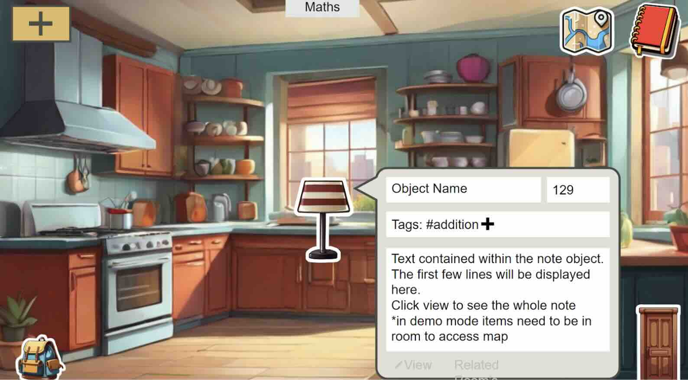
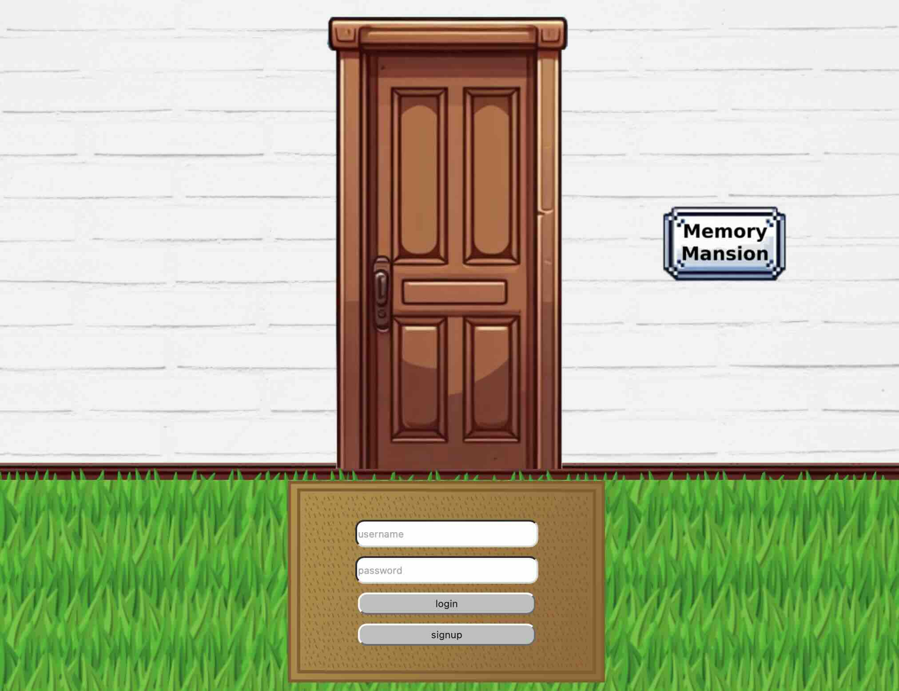

A group-built memorisation app that uses the "Method of Loci" - a proven cognitive technique that links knowledge to physical spaces. Users upload a photo of a real-world room and pin digital notes to real objects. This reinforces memory when those objects are seen again in daily life.
The project followed an agile workflow, with Trello for task management and GitHub for version control.
Alongside contributions to research and conceptualisation, I was responsible for the front-end of the Login system. I designed and created a user interface - designed to look like the front door of the mansion, which connects to the BackEnd Login API
